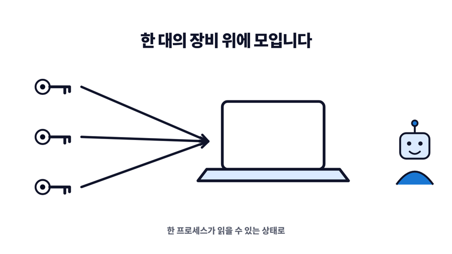
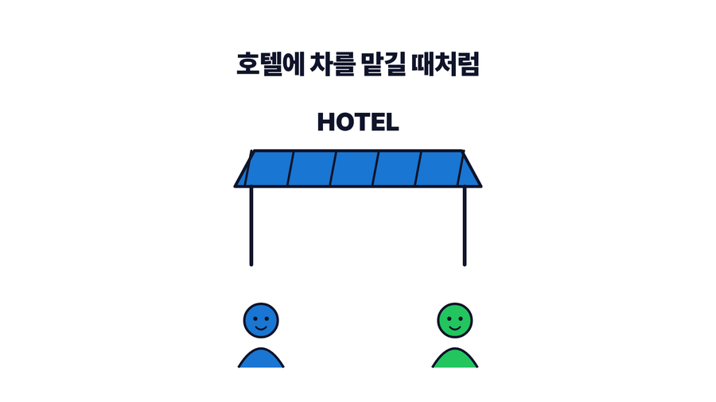
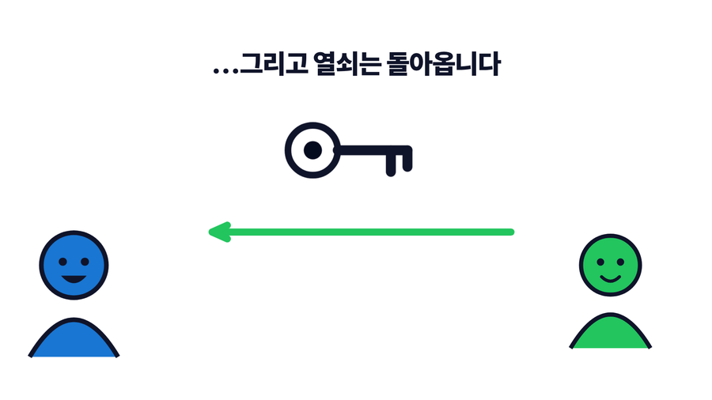
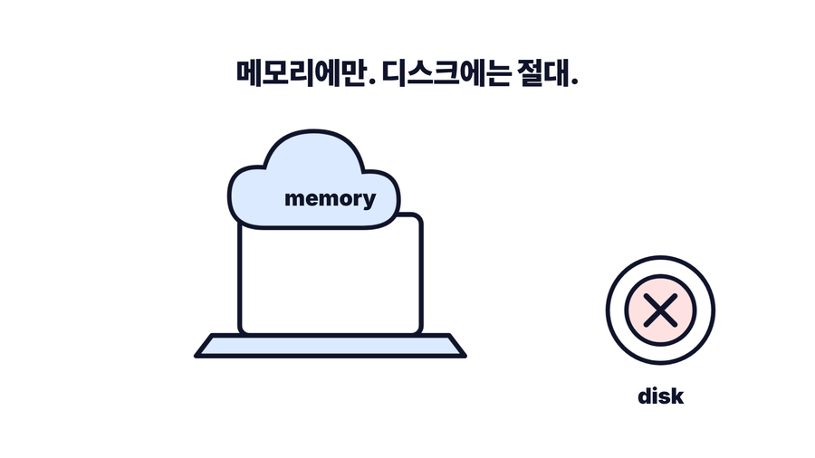

ValetFS
맡기되, 넘기지는 않습니다.
API 키는 폰에 둡니다. AI 에이전트에게는 일하는 동안만 빌려주고, 키는 에이전트 장비의 메모리에만 올라갑니다. 디스크에는 남지 않습니다.
맡기되, 넘기지는 않습니다.
API 키는 폰에 둡니다. AI 에이전트에게는 일하는 동안만 빌려주고, 키는 에이전트 장비의 메모리에만 올라갑니다. 디스크에는 남지 않습니다.
이 앱이 왜 필요한지 2분으로. 영어 내레이션이고 AI로 만들었습니다.
AI 에이전트에게 클라우드 토큰을 넘기면 확실히 편합니다. 인프라를 올리고, 배포하고, 새벽 세 시에 로그를 뒤져 문제를 고쳐 놓습니다. 잠들지 않는 데브옵스 팀이 하나 생긴 셈입니다.
문제는 그 편의를 얻으려고 치른 값입니다. AWS, Cloudflare, GitHub, 데이터베이스 — 가진 키가 전부 한 대의 장비에, 프로세스 하나가 읽을 수 있는 상태로 놓입니다.

여기서 두 가지가 걸립니다.
키를 다시 발급하는 건 사고가 난 뒤의 수습이지 예방이 아닙니다. 넘긴 시점과 다시 발급한 시점 사이의 공백은 아무도 재지 않습니다.

호텔에 차를 맡길 때를 떠올려 보십시오. 키를 건네지만 차를 넘기는 건 아닙니다. 직원이 몰고 가 세워 두고 다시 가져다주면, 키는 도로 내 손에 들어옵니다. 잠깐 쓸 권리를 맡겼을 뿐, 차의 주인이 바뀐 적은 없습니다.

ValetFS는 키를 그런 식으로 다룹니다.
키는 폰 안의 앱에 보관합니다. 에이전트가 도는 장비에는 작은 데몬을 하나 띄웁니다. 허락하는 순간 폰이 종단간 암호화로 데몬에 키를 밀어 넣고, 데몬은 그걸 메모리에만 들고 있습니다.

에이전트 입장에서는 그냥 로컬 파일입니다. FUSE를 쓸 수 있으면 FUSE로, 없으면 루프백 WebDAV와 CLI로 내줍니다. 데몬이 내주는 값이 그 장비의 디스크에 기록되는 일은 없습니다.
fs:를 붙입니다.
fs:/keys/github는 금고 안의 경로라는 뜻이지 이 장비의 경로가 아닙니다.
ls와 cat은 fs: 없는 경로를 아예 거부합니다.
문제는 cp와 mv입니다. 이 둘은 양쪽을 다 받고 방향을 알아서
판단하기 때문에, 여기서 접두사를 빠뜨리면 키가 평문 그대로 디스크에 쓰입니다.
이것 하나만 기억해 두십시오.
키를 보관하는 서버가 없습니다. 중계 허브(Cloudflare Worker + Durable Object)는 폰과 데몬이 서로를 찾도록 암호문만 전달합니다. 평문은 볼 수 없고, 연결이 맺어진 뒤에는 경로에서 빠집니다.
장비에서 데몬을 실행하면 터미널에 QR 코드가 찍힙니다.
valetfs serve앱에서 Pair a daemon을 눌러 그 QR을 찍으면 끝입니다.
터미널을 열기 번거로우면 건너뛰어도 됩니다. Provision an agent를 누르면 앱이 지시문을 대신 써 줍니다. 클로드 코드나 제미나이, 코덱스에 그대로 붙여넣기만 하면 에이전트가 알아서 데몬을 받아 설치하고 세션에 붙습니다.


연결 키는 그 세션을 여는 열쇠 그 자체입니다. 비밀번호처럼 다루고, 믿을 수 있는 에이전트에게 안전한 경로로만 건네십시오.
따로 챙길 필요가 없습니다. 앱을 닫으면 데몬이 카운트다운을 시작하고, 시간이 다 되면 금고를 내리고 메모리를 0으로 덮어 지웁니다. 세션 화면에는 남은 시간이 아니라 몇 시에 지워지는지가 적힙니다.

기다리지 않고 폰에서 바로 끊을 수도 있습니다.
| 누르면 | 이렇게 됩니다 |
|---|---|
| Lock now | 바로 금고를 내리고 메모리를 0으로 지웁니다 |
| Unmount | 파일 제공만 멈추고 세션은 살려 둡니다 |
| Forget this daemon | 페어링 자체를 지웁니다 |
App Store에서 ValetFS 받기 — 무료이고 iPhone과 iPad를 지원합니다. 한국어를 포함해 7개 언어로 나옵니다.
Linux x86_64와 arm64를 지원합니다. root 권한도, 드라이버도, FUSE도 필요 없습니다.
curl -fsSL https://winm2m.github.io/valet-fs/install.sh | bash에이전트가 스킬을 지원한다면 ValetFS 스킬도 같이 설치하십시오. 다음 대화에서도 디스크의 키를 읽기 전에 금고부터 확인하게 됩니다.
curl -fsSL https://winm2m.github.io/valet-fs/install-skill.sh | bash
macOS나 Windows, 그 밖에 지원하지 않는 아키텍처라면 소스에서 빌드하면 됩니다 —
go build -o valetfs ./cmd/valetfs.
자세한 내용은 설치 가이드를 보십시오.
valetfs ls -l fs:/keys # 앱이 밀어 넣은 것 확인
valetfs cat fs:/keys/github # 하나 꺼내 보기
valetfs status # 마운트 상태, 사용량, 남은 유예 시간데몬과 CLI, 중계 워커는 MIT 라이선스로 github.com/winm2m/valet-fs에 공개돼 있습니다. 무엇이 키에 닿는지 직접 읽어보고, 직접 빌드해 쓸 수 있습니다.
iOS 앱은 무료입니다. ValetFS Pro는 한 번만 결제하면 되는 인앱 구매로, iCloud 키체인 동기화가 붙습니다. 금고가 폰 한 대에 묶이지 않고 새 기기로 따라옵니다.